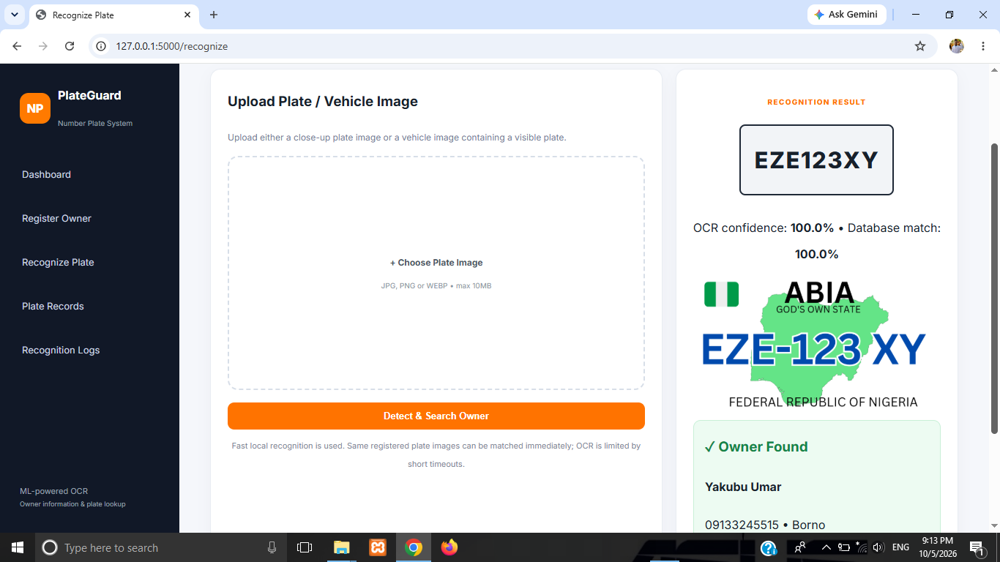
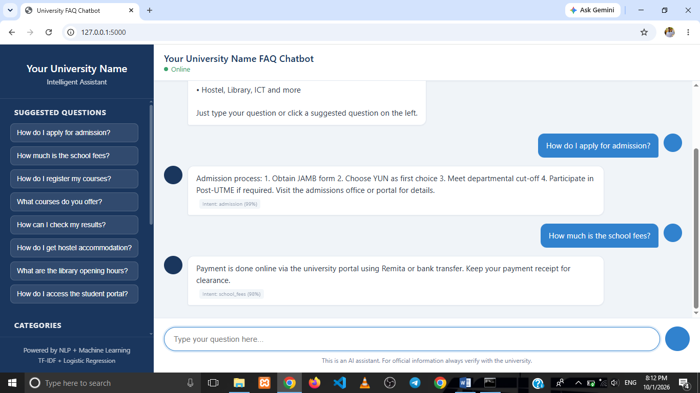
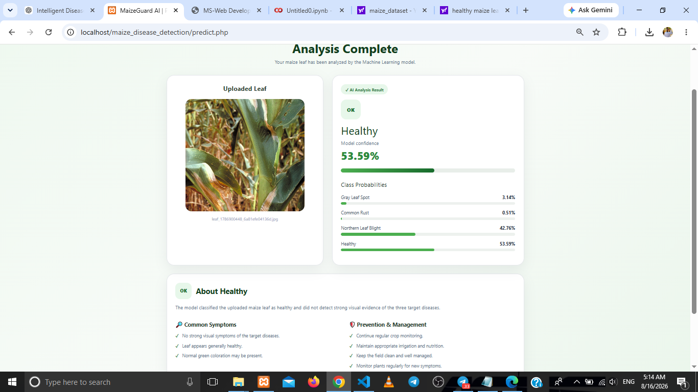
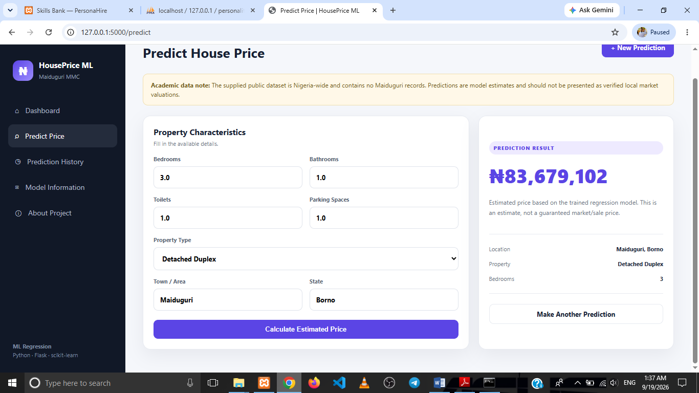
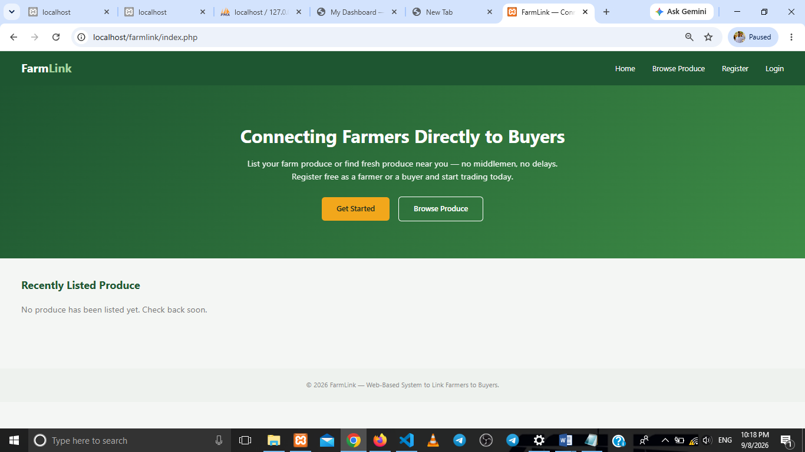
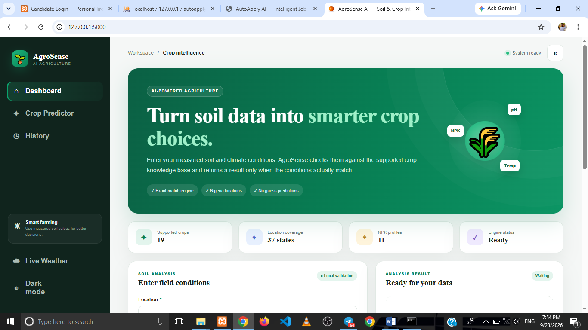
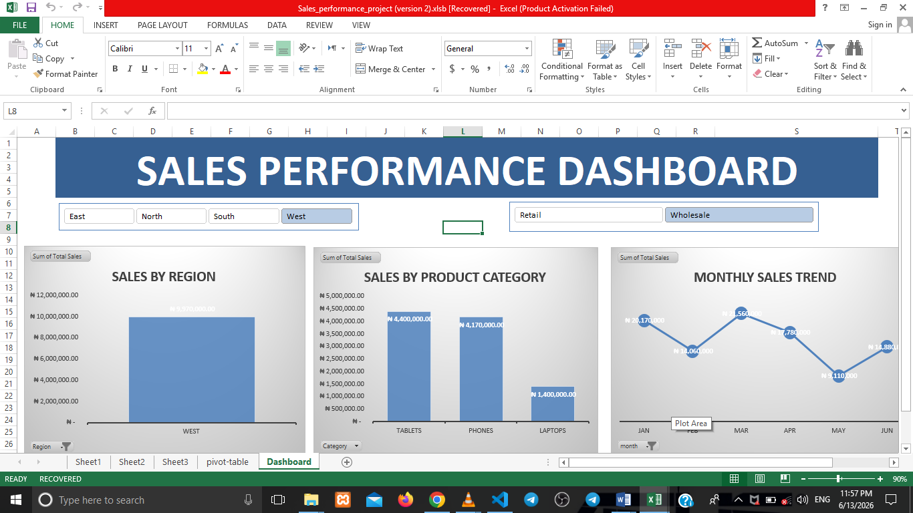

Explore my projects in web development, data analysis, and machine learning. From business and school management systems to intelligent prediction models and interactive dashboards, each project demonstrates my practical skills in building useful digital solutions.
A company website developed to present 5 Star Solutions and its services through a professional online presence. This project demonstrates my ability to build structured web pages and develop web solutions using frontend technologies and backend tools.
A web-based transportation booking application designed to help users book journeys and manage transport information. The project demonstrates my skills in building interactive interfaces and connecting web pages with backend logic and databases.
A school management application designed to organize student records, staff information, academic results, attendance, and school administration. It demonstrates my experience developing database-driven web applications and creating interfaces for managing academic information.

Number Plate SystemA computer vision application designed to recognize vehicle registration plate information from uploaded images and retrieve matching registered details. The project combines image processing, Python-based recognition, and database operations.

University FAQ Chatbot SystemA university-focused chatbot designed to answer common questions about school information. Users can submit questions and receive relevant responses, making important information easier to access through a simple web interface.

Maize Disease Detection SystemA machine learning application designed to analyze uploaded maize leaf images and identify disease categories supported by the trained model. The project explores image-based classification and the practical use of machine learning in agriculture.

House Price Prediction SystemA machine learning project focused on predicting house prices in Maiduguri Metropolitan Council using property-related information. It demonstrates how data preparation and regression techniques can be applied to estimate property prices.

Farm ConnectionA web-based agricultural marketplace that connects farmers with buyers. Farmers can showcase their agricultural products and specify prices, while buyers can explore available produce and connect with sellers. The system demonstrates my backend development and database management skills.

Crop Agrosense AIA web-based agricultural prediction system designed to use environmental conditions to recommend suitable crops. The project applies data-driven prediction techniques to support agricultural decision-making and demonstrates the practical application of Python and machine learning.

MS DashboardA data analysis project focused on organizing and cleaning sales data, summarizing information with PivotTables, identifying sales patterns, and presenting insights through an interactive Excel dashboard. It demonstrates my ability to turn raw data into clear visual reports that support decision-making.
Projects Showcased
Core Skill Areas
Application Development
Analysis & Intelligent Solutions
I'm open to freelance work and full-time opportunities. Let's build something great together.
Get In Touch →